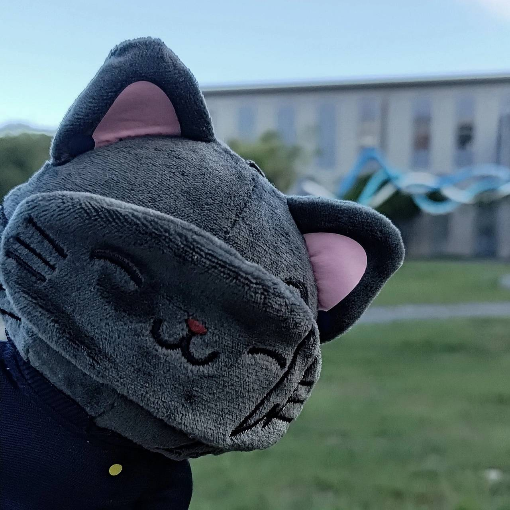
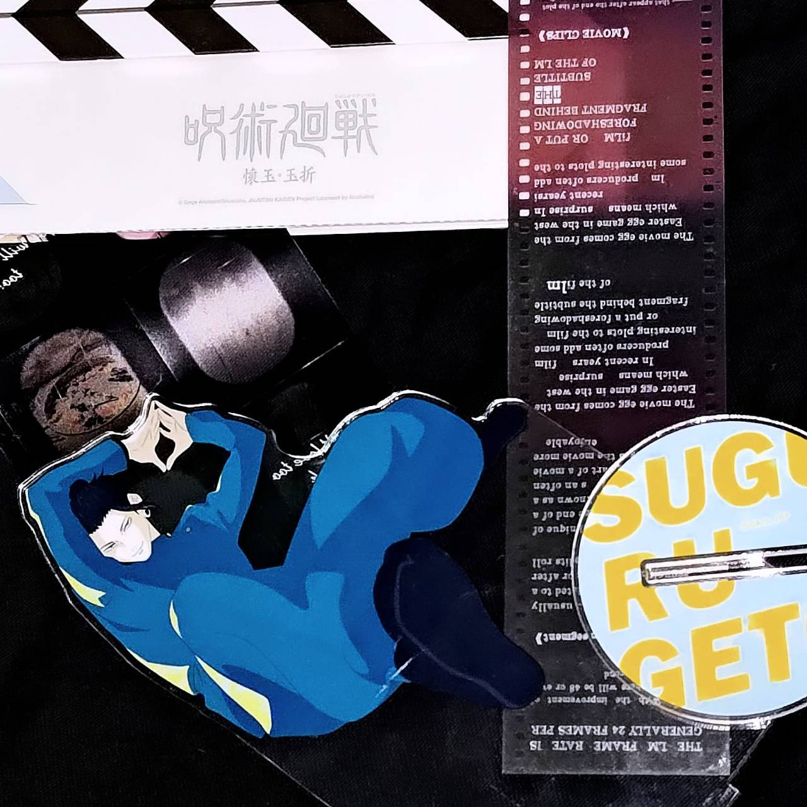
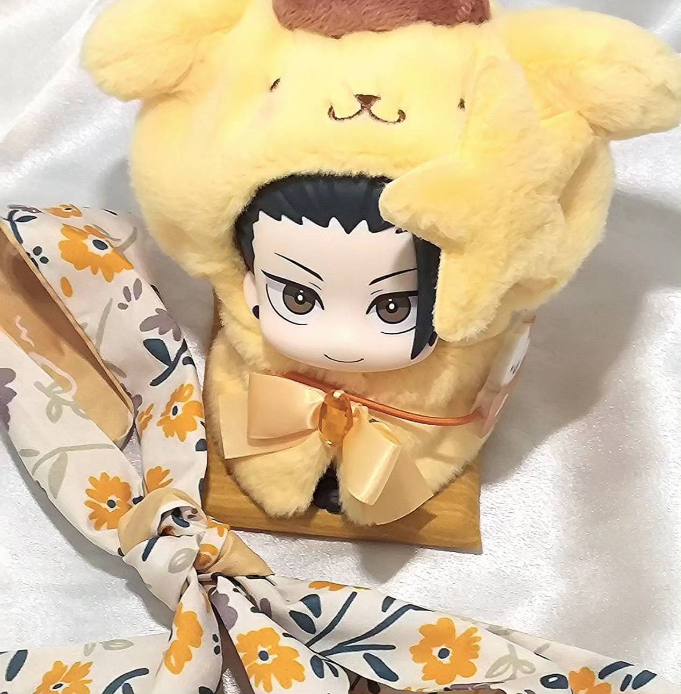

推し活介紹
推し活為日本文化，利用各種形式支持自己喜歡的角色。
角色簡述
角色為咒術裡的夏油傑，學生時期的意外而導致心境變化，為追求自己的理念選擇叛逃，立志創造只有咒術師的世界。於百鬼夜行時被摯友，五條處死。
照片展示
以下照片皆為自攝。

withCAT 呪術廻戦第二期
This is a link
じゅじゅフェス2024
This is a link
MAPPA×TSUTAYA「呪術廻戦 懐玉・玉折」
This is a link

じゅじゅフェス2023
This is a link

るかっぷ 呪術廻戦 夏油傑 高専ver.
This is a link